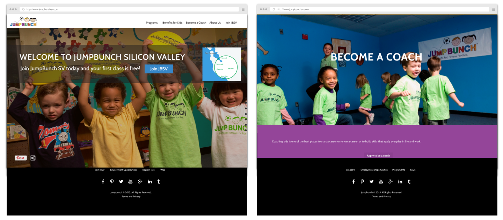
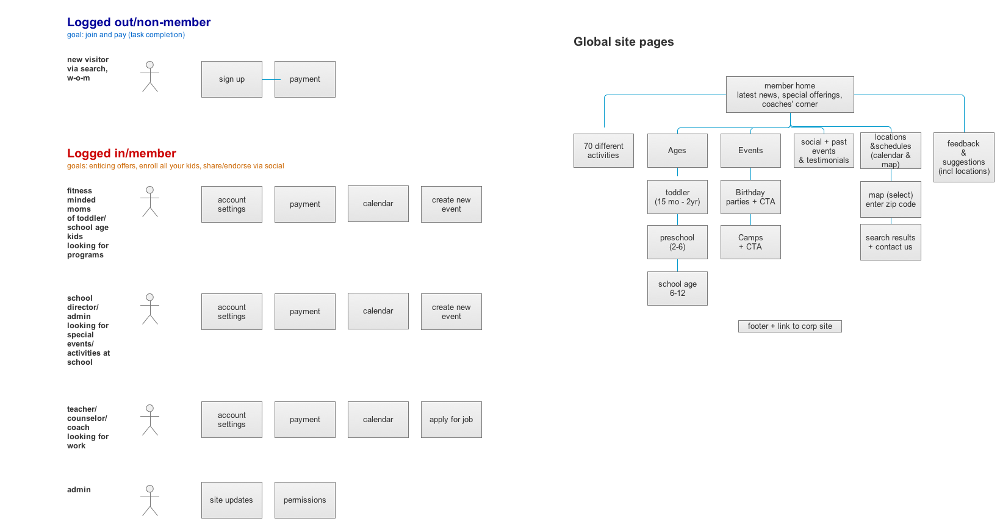
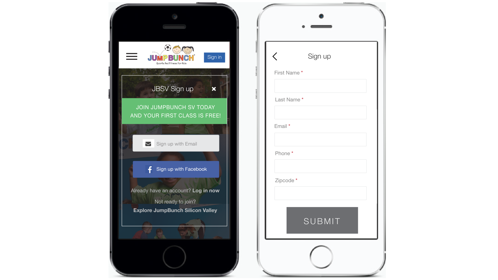
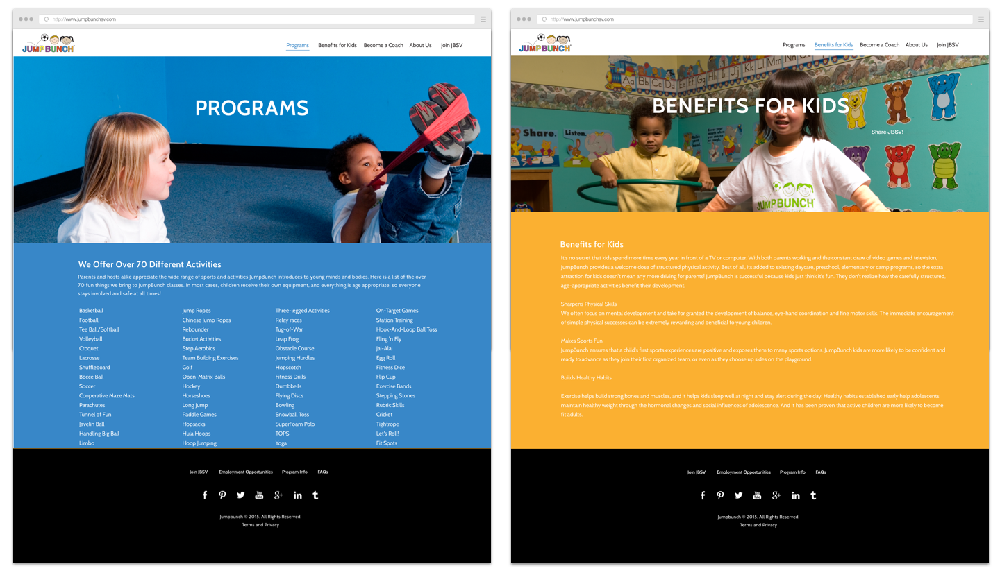

JumpBunch is a site targeted for parents and guardians of young children. It's an extracirricular year-round fitness program for ages 2-12. This Silicon Valley franchise site was designed and built as the new design template for all U.S. JumpBunch franchises.
Goal: Design and develop a responsive website targeted to tech-savvy Silicon Valley parents and guardians. Inform users of kids fitness program, enroll and convert to members. Features offered included: sign up, class schedules and registration, tuition payment, personal photo galleries and apply to become a coach.

Team: 2 engineers, 1 product lead, 1 product designer
Process
- Competitive audit to help understand competition and target audience site map to denote inventory of content and allow for scalability to define phased approach of features.
- Sketch flows for each user type to begin mapping UX
- Create architecture of system
- Wireframe basic pages including content
- Begin to define design language and determine assets (photos and forms) needed
- Explore mobile designs in parallel with desktop experience
- Several design iterations and refinement
- Provide specs for engineers
- Design QE
Project Results
- Parallax site design and experience for sophisticated Silicon Valley audience
- Responsive design
- Completed flows for online registration and payment
- Launched alpha in January 2015
Early designs, flows and maps.


